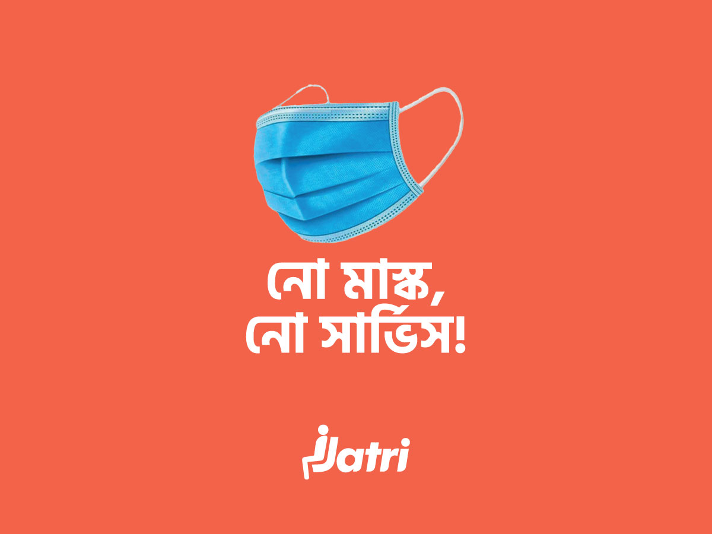
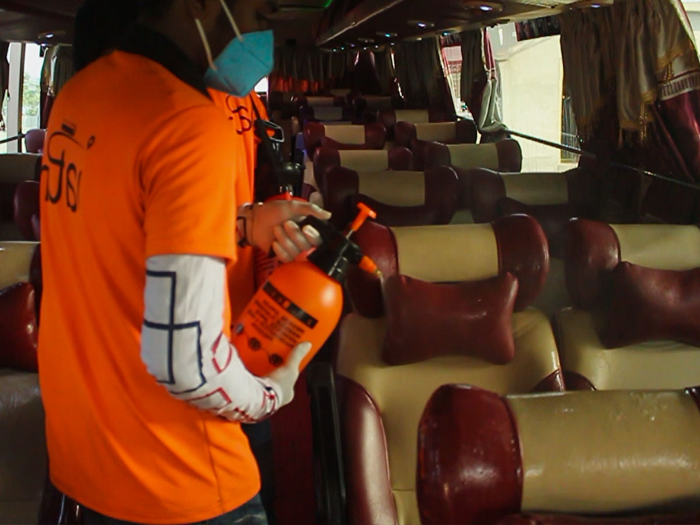
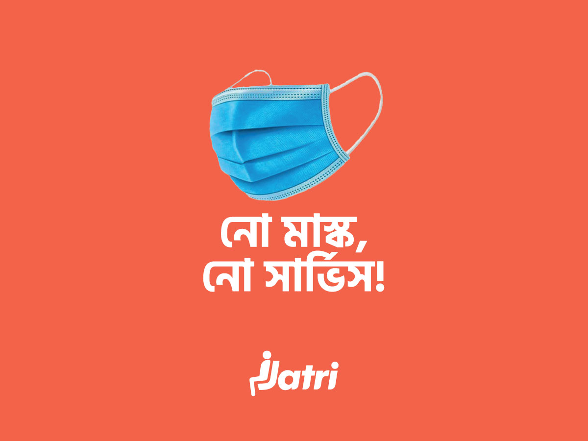
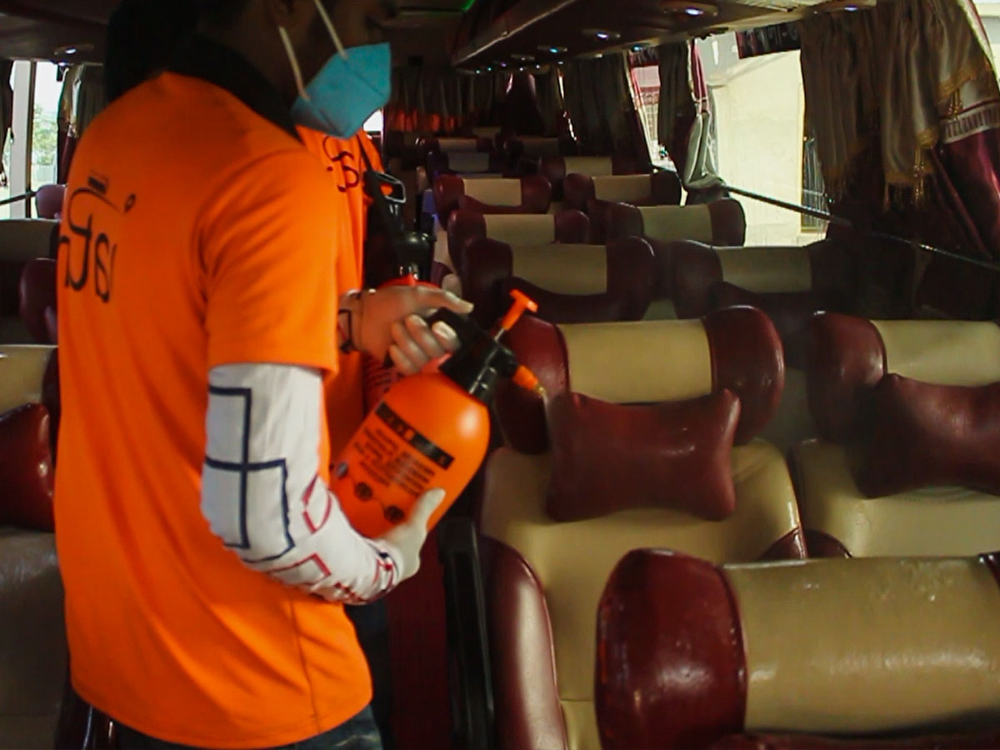

Cashless, contactless commute: A new way to travel?
While various transport platforms are available throughout Dhaka city, 47% of all commutes are covered by public buses. Providing a cheaper and more accessible alternative, bus commute remains the go-to option for people of the middle income and lower-middle income families. As bus travel covers up to almost half of all travel in the city, it is of utmost importance to ensure that passengers enjoy a hygienic, stress-free and safe commute every day. Combining the immense pressure on buses with the dire need for a more hygienic and safer commute, it is crucial that the bus industry undergoes a reform.
Jatri’s mission is to change the dilapidated and unreliable image that exists of buses in Dhaka by promoting digitalized ticketing and tracking in buses. With that goal in mind, Jatri has been working towards new and unique initiatives for cleaner, sustainable and environmentally healthier commute since early 2019. With the mission to improve passenger experience with the help of technology, it is currently partnered up with prominent buses of major bus operators of Dhaka city. It has on boarded more buses to its platform, which will be launched after lockdown ends to make safe commutes accessible to all. The buses integrated on Jatri’s platform are constantly monitored and supervised to develop/revamp user comfort/satisfaction.
Shorter waiting times
Traditionally, buses in the city don’t follow a specified schedule. Commuters are seen waiting in long queues for upto an hour for a bus, which increases risk of contact between them. Jatri addresses this issue using its tracking and ETA (Estimated Time of Arrival) bubble features. Once you enter your location and destination, Jatri shows you a list of buses on your route. Each bus shows its estimated time of arrival, giving you the flexibility to choose your bus according to your schedule. Once you select a bus, the ETA bubble pops up. The ETA bubble is similar to the facebook messenger bubble, except that it shows the remaining time until your bus reaches you. It’s a handy tool to use in case you’d like to multitask on your phone while waiting for your bus. The ETA bubble stays at a corner of your screen, notifying you when your bus is near. These features show the live location of buses in real time, ensuring that no passenger has to wait at a queue or a bus stop for any duration of time.
Contactless/Risk-free ticketing
What about when one reaches the bus stand and pays for his ticket? Doesn’t that increase the risk of contamination? This issue is resolved by Jatri’s bus pass and cashless payment system. Jatri supports both app-based and counter-based ticketing. Through app based ticketing, passengers can purchase a bundle of his tickets at once and pay using Jatri’s digital payment options (i.e.Nagad, Bkash, VISA, Mastercard, etc.). Then, he can simply verify his ticket with a click on his phone before boarding.
For bus companies interested in counter based ticketing, Jatri has POS machines for theır counters, which support digital payment too! Apart from ticketing, POS machines collect records of every transaction, which allows all the transactions to be directly handled by bus operators. App based ticketing options ensure that commuters don’t risk contamination from the conductor at any point.
Azız Arman, Co-founder & CEO of Jatri, stated that, “Jatri has always promoted reliable and comfortable commutes for people. The COVID-19 crisis has drastically affected the public transportation system, causing us to reassess and reevaluate the way people travel. We hope our servıces (such as sanitizers, cashless ticketing and trackıng buses) will play a considerable role in hygienic and safer commuting for all.”
A safer journey
A valid concern for commuters is the risk of contact from other commuters. To diminish chances of contamination, Jatri supports a pre-booking feature ın an upcoming feature to be launched after lockdown. This allows users to select their seat number and position beforehand to confirm social distance from other commuters. Through the app, passengers will also be notified which buses have been sanitized and cleaned- giving them a relaxed commute everyday.
During the COVID-19 crisis, Jatri has supported frontline workers of the bus industry by distributing care packages for their families. For the medical personnel fighting heroically everyday to save patients, Jatri provided free tracking in a joint collaboration with Trust AC transport service.
Jatri's services are a game changer in enhancing every day commute, making every bus journey a safe, joyful and pleasant experience.
Kazi Ayesha Rahman
February 2021